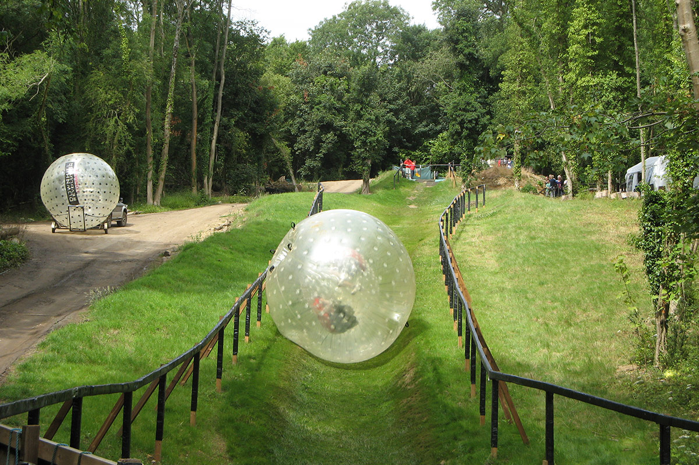
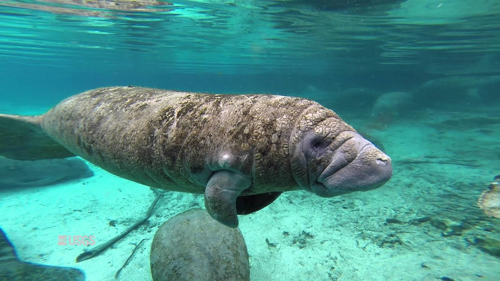
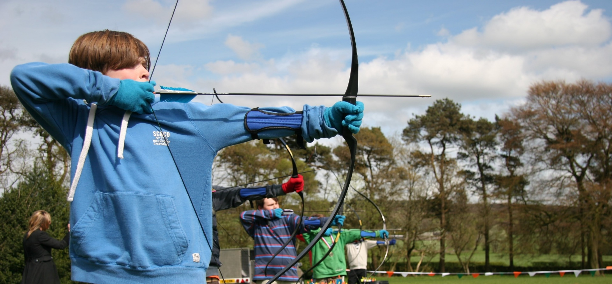

Snorkeling in Los Roques Archipelago
Go snorkeling in Los Roques Archipelago in Venezuela. The entire atoll, 80 miles north of Caracas, is a national park. Most of the islands of the archipelago–there are about 300 islands in total–are uninhabited, and are only accessible by boat from Gran Roque, the big island.

Ride a Mechanical Bull
Mechanical bulls were originally intended for rodeo competitors in training, but now you can readily find them in bars and restaurants. They’ve also become popular at parties and fairs. Put on a cowboy hat, clench your thighs, and hold on for dear life.

Go Zorbing
Zorbing is a recreational activity which involves rolling downhill inside an orb, generally made of transparent plastic. You have two options: Zydro, a sort of water-ride version of the Zorb, and Zorbit, the dry version.

Swim With Manatees
Go snorkeling with manatees in Crystal River, Florida, US. Manatees, or sea cows, as they are sometimes called, are aquatic mammals that can grow to 13 feet and can weigh over 3,000 pounds. From November through March, Crystal River, 70 miles north of Tampa, is the epicenter of manatee-watching. Manatees are gentle and approachable.

Do a Color Run
Do a 5k color run. A color run, also known as “the happiest 5K on the planet”, is an un-timed race in which thousands of participants are doused from head to toe in a different color at each kilometer. You start out dressed all in white and end up covered in a hue of different colors.

Hike the Appalachian Trail
Hike the Appalachian Trail, a 2,184 mile long public footpath which traverses lands of the Appalachian Mountains in the eastern United States. It extends between Springer Mountain in Georgia and Mount Katahdin in Maine. The trail passes through the states of Georgia, North Carolina, Tennessee, Virginia, West Virginia, Maryland, Pennsylvania, New Jersey, New York, Connecticut, Massachusetts, Vermont, New Hampshire, and Maine.

Learn Archery
Learn archery, the sport of shooting at a target with a bow and arrow. The bow and arrow have been around for thousands upon thousands of years. If you’re a hunter, you can use archery for hunting. If you’re not a hunter, but want to shoot solely for competition and recreation, there are many events you can participate in. Traditional archery clubs across the world have regular competitions and events you can get involved in.

Watch a Baseball Game at Wrigley Field
Wrigley Field–located in Chicago, Illinois, and home of the Cubs–is one of the most iconic baseball stadiums in the US. The famous field turned 100 years old in 2014. Every baseball fan should make the pilgrimage to Wrigley at least once in their lifetime.

Get a PhD
Get a PhD and master a specific subject thoroughly. By getting a PhD you’ll be joining the intellectual elite. At the same time, you’ll become more critically sophisticated in your area of expertise.
Prepare a Will
A last will and testament is a legal document that dictates what happens to your estate once you pass away. Having one ensures that your assets will be distributed according to your wishes when you die. You should get this done as soon as possible since the reality is that you never know when you’re going to need it.